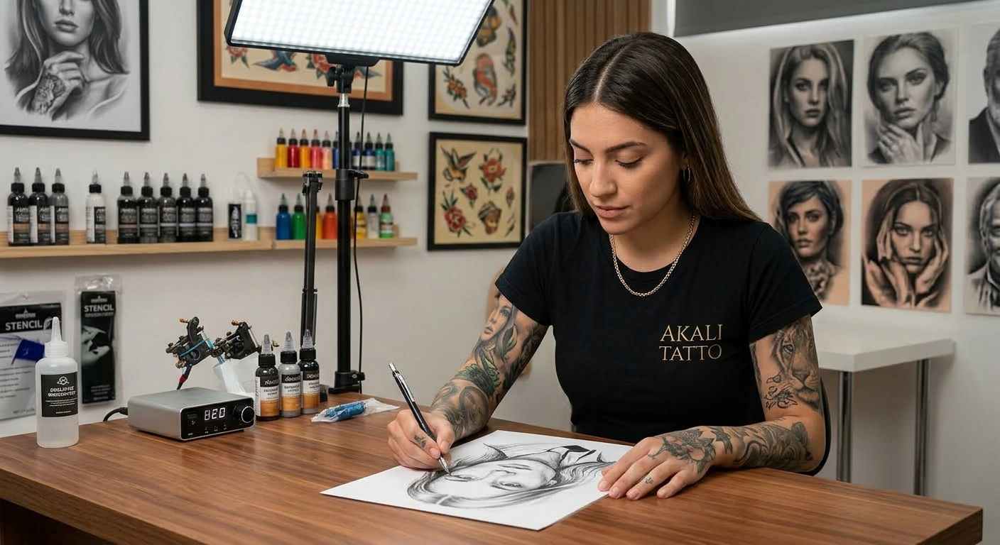

Mariela Garcia
Estilo: tradicional y color
Especialista en tatuajes de estilo tradicional, con más de 8 años de experiencia en técnicas de sombreado y color saturado. Su trabajo se distingue por la precisión del lineaje y la intensidad cromática.
Especialista en tatuajes de estilo tradicional, con más de 8 años de experiencia en técnicas de sombreado y color saturado. Su trabajo se distingue por la precisión del lineaje y la intensidad cromática.

Especialista en tatuajes de estilo realista, con más de 5 años de experiencia en técnicas de color y reproducción de detalles. Combina realismo y luminosidad para resultados fieles y duraderos.
Especialista en estilo minimalista en blanco y negro, con más de 12 años de experiencia. Se caracteriza por la limpieza de las líneas y la síntesis visual, logrando piezas sutiles y elegantes.
Especialista en estilo japonés, con dominio de técnicas tradicionales y modernas. Integra composición, color y simbolismo para crear piezas de gran impacto visual.